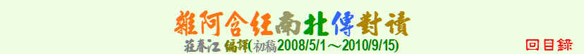

主題索引
教理
觀念
生活
實踐
事蹟
譬喻
其它
教理
一切都在燃燒
七覺支的內容
七覺支的滋養
八聖道的內容
八種定的特性
十二處的內容
三法印
三學的內容
上座禪
不對白衣說的法
中道的內容
五根的內容
五蓋的內容
五蓋的滋養
五力及各種力
五取蘊的內容
什麼是人
什麼是滅
什麼是無明
什麼是世間一切
什麼是薩迦耶見
六根是門
六根的運作
六根是一切欲法
世間是空
世間的集滅
世間不過三諦
四種清淨
四正斷的內容
四念住的內容
四念住的集滅
四聖諦的內容
四種食物營養
四不壞淨的內容
正見的內容
正見為先導
生喜則生苦
先知法住
因見而共諍
因貪而共諍
因愛故取而說有餘
在哪裡見我
如何有下一生
成一對
有欲貪則有結
有隨眠者執取
有六根而無其染
次第說法
自通之法
依食斷食
佛法的特性
我勝我等我劣
我與欲貪的關係
見法即見佛
見我異我相在
見十遍處之過患
走到世界之邊
依欲斷愛
依慢斷慢
依執取故我在
法眼淨的內容
空相應緣起法
非世間事為欲
流轉與還滅
為何要修四念處
為何要調伏欲貪
苦從何來
常我見的內容
情愛的特性
欲貪是其繫
欲貪者不知無常
貪而染厭而淨
貪瞋癡是業源
貪染依住於五蘊
無常苦空非我
感受如何生起
慚愧隨生正見
構想是束縛
緣起的內容
緣起的五支說
緣起的十支說
緣起故無常
諸行無常
諸受皆苦
論因說因
輪迴的原因
導致再生的渴愛
斷慢證解脫
斷老病死之道
斷婬欲的橋樑
薩迦耶的四諦
薩迦耶的集滅
離欲貪得解脫
識亦非我
識無住處
識以思攀住
識以貪攀住
識以怕無我攀住
福罪如影隨形
觀念
人身難得
十四無記
不是你的
不畏不活
不要報復
不意圖來生
無實來實去
不應說有無
不只是戒清淨
不因演藝生天
不因戰鬥生天
不為名利修學
不能隨心所欲
不懷念與後悔
不因乞食成比丘
不涉入無益之事
不尊敬有五欲者
不聽不見非修根
心的特性
心比身無常
心的主導地位
正見者不墮惡趣
生者必死
生子常得苦
如來死後有無
有業報而無作者
老病死是契機
佛出人間
佛與聲聞羅漢之異
戒信慧福的特性
依人者五過患
命即是身嗎
拋棄敵意與成見
金山也不滿足
非因計因
非自他無因作
怎樣看待四食
破四姓說
破尼乾子地獄論
破尼乾子兩面論
破尼乾子苦行論
破宿業盡得解脫
破富蘭那無因論
常見斷見
祭祀的問題
貪著是有伴同住
惡業的稀釋
無眾生
無始輪迴
無關男女
無不勞而獲
無欲求最樂
無一處無父母
無不散的宴席
無我則誰受報
無老病死則無佛
給多病的人
傲慢的特性
愚者慧者之差別
慈心勝布施
愛無過於己
過去有幾劫
過去未來佛無數
像是樂的苦
壽命無常把握修行
廣大福德亦耗盡
慧根為棟梁
緣起甚深
擁有則有憂
雖愛家人更愛法
懺悔不能消惡業
離四念住則離聖法
觀無常的方向
生活
九法致財損
十善的內容
不決勝敗
不只是禪定
不共語不教誡
不離自己的境界
不歡喜也不憂愁
五法糾舉他人
今生安樂
心靈的沐浴
以牙還牙會更糟
四攝
正當地維生
正念正知不散亂
布施得福
犯過者應自省
如何面對謾罵
有關布施
自利利他
行持戒
忍耐的利益最高
侍奉有德尊長
來生安樂
兒子不如柺杖
奉養父母
居家操煩
法施為最勝
施恩惠
面對流言
探病
清明不昏睡
善學忍辱
飲食知量
當面懺悔
當老死來臨
睡得安穩
福德為資糧
說實話
瞋恚睡不好
臨終關懷
舉罪者應自省
觀察而知人
實踐
一乘道(一道)
七處三觀
入滅正受
八關齋戒
十二緣起之四諦
不失念
不顧念不歡喜
不放逸(勤奮)
五根的七處
五蘊的七處
五蘊當觀生滅
六念
六根的七處
六根之修習
六處當觀集滅
分明地覺察
止觀之修習情況
以涅槃為所緣
四預流支
四念住止身苦
四聖諦的運用
平日經常的實踐
正定的資糧
生天之路
先斷五蓋
如何修七覺支
如何修八聖道
如何修四念處
如何修安般念
如何修四無量心
守護與自制
安般念之先修
自依止法依止
住於正念正知
住阿蘭若或僧團
佛陀最後的話
努力於禪修
戒→正見→四念住
身念處
身苦心不苦
直證解脫
受的七處
味患離
知非羞愧即離
信戒施聞慧
看只是看
修五力
修五根
修七覺支
修四正斷
修四念住
修四聖諦
修行次第
修八支聖道
修四如意足
修三十七道品
漸次證四聖諦
修安般念得四禪
修定生天或證果
修止成觀修觀成止
真實禪與強良禪
逆我不應瞋
逆順觀察緣起
假想觀
從受著手
從五法修六念
從斷無明觸著手
從不淨觀修七覺支
從四不壞淨修五喜
從四不壞淨修六念
從四不壞淨修六法
從四念住修七覺支
從安般念修七覺支
從安般念修四念住
從空入處修七覺支
從隨死念修七覺支
從無常想等修七覺支
無常厭離欲解脫
發動活力
善知識(善友)
順我不應貪
滅除慢
滅苦的方法
滅惡不善法
對治淫慾
對感受不染著
諸惡莫作
調伏斷越欲貪
遮止貪瞋癡
臨終該做的
斷欲愛
離極端行中道
鬆緊適中
覺知貪
觀空三昧
觀無相三昧
觀無量三昧
觀無所有三昧
觀無常苦非我
觀察無常斷欲貪
觀察無常(生滅)
從觸著手
事蹟
一人傳教
三種教化
不敬法則不說法
不可貌相
不因說法而受布施
介紹佛陀
六年中無人問及
天帝釋禮佛
天子羨慕人類
天帝釋的特質
比丘尼愛慕阿難
世尊背痛
世尊到梵天
世尊離開僧團
以天眼天耳交談
目揵連代轉法輪
有學無學的差異
自稱為佛
自稱無上遍正覺
佛陀入滅
佛陀受傷流血
佛驗證舍利弗
佛到忉利天說法
佛陀選擇不回答
佛陀勸迦葉說法
佛教未具領導地位
佛讓半座
呼風喚雨
夜叉的戲弄
夜叉打舍利弗
夜叉威脅佛陀
於佛前取般涅槃
舍利弗入滅
舍利弗得解脫
目揵連震動天宮
初轉法輪
初成佛時的魔考
金剛護法
阿修羅畏世尊
阿難證初果時
前妻的測試
挑戰世尊
迦葉受譏
迦葉得解脫
迦葉責阿難
修不淨觀自殺
師及弟子同義句
鬼母哄其子
捨斷或根除五蓋
教化最後弟子
教安般念因緣
梵天勸請
被毒蛇咬
被魔控制
連喪七子
盜法
給孤獨見佛因緣
善來比丘
慈地兄妹的誣陷
裝鬼嚇佛
質多羅的命終
質多羅引導老友
質多羅論破尼乾子
質疑佛陀的記說
燒材而不燒衣
頻婆娑羅王迎佛
應接受當面懺悔
關於自殺
關於鴦覺摩羅
難陀的裝扮
勸捨頭陀行
魔使佛空鉢而回
魔額頭上三條線
聽法中證果
讚頭陀行
讚美世尊
讚美舍利弗
譬喻
七覺支如七寶
三種田
三蘆鼎立
大醫王
大樹之倒下
大枝大岩先壞
小牛飲乳不厭
小象學不了大象
不能彩繪虛空
不善覺如蠅卵
中第二枝箭
五欲如火坑
五取蘊為重擔
六種魔鉤
六根貪愛如海
切斷蟹腳
太陽昇起的前兆
心如畫師
日受三百槍苦
水滴熱鐵
火燒已不復更燒
古仙人道
四念住如牧場
四不壞淨如食物
幼鼠咬死貓
如塗油
如種樹
如調伏馬
如入荊棘林
如火之熄滅
如火燒羽毛
如火燒頭衣
如拍手出聲
如狗繫於柱
如逆水行舟
如被水沖走
如照顧嬰兒
如蓮出污泥
如見帝釋旗幟
如林中的樹枝
如種子的生長
自制如裹傷
色如聚沫
衣服的殘留味
戒如樹根
見井水而無繩罐
身體如客棧
兩木磨擦著火
取一芥子
受如水泡
服侍王妃騎象
法的鏡子
狐狼想作獅子吼
油燈的燃燒
盲龜浮木
空中飛火亦有餘
恒河東流
美味的毒飲料
耐心驅牛
苦受如海
風吹不動大石
射破百分之一毛
柴火的燃燒
烏鴉擊肉石
烏龜縮入殼
特技表演
耕田播種
逆風撒土
從牛乳到醍醐
盛水容器
眾生如車子
第七根棍子
脫落枝葉剩樹幹
逐階逐樓走
提煉黃金
無根的棕櫚樹
琵琶琴聲
善調琴絃
善惡人皆如月
黑牛與白牛
黑暗中的燈火
渴愛是裁縫師
亂如狗腸
想如陽燄
葛藤的蔓延
僧團已空
孵雞蛋
寧壞六根
榕樹的氣根
漂流木
種子小樹大
緊獸是什麼
輕如棉花絨
諸行如芭蕉
糞少亦臭
黏膠捕猴
穩固如長石柱
穩固如因陀羅柱
識法如幻術
獼猴攀樹
護持油鉢
鷹鶉之戰
驢子不會是牛
其它
一劫有多久
九次第定
二種福田
人與動物的差別
人間的優勢
十二分教
三學的功效
不再生則無過
六師外道
午睡
天界的時間
天帝釋名字典故
世間的盲目者
四眾弟子
四聖諦的重要
四種禪的特性
四不壞淨的利益
四念住為一切法
尼乾子的苦行論
末迦梨的宿命論
正法的消失
各種神通
各種第一
各種聖者
名為法師
名為多聞者
名相解說集
名為法隨法行者
地獄中的壽量
如來的十種力
如來的四無畏
有學具備八支
自恣日
佛光是無上的
佛陀的十種稱號
佛教與婆羅門教的不同
戒條數目
我慢的特性
制不受畜金銀
制學處的目的
咒語的滲入
法數
法界常住
法住法空法如法爾
初果者的特質
阿羅漢的三明
阿耆多的斷滅論
阿羅漢斷貪瞋癡
染著女人梵行垢
為富不仁
胎兒的成長
迦旃延的唯物論
迦葉的道德否定
修四念住的利益
涅槃的特性
真實無誤無例外
神通原理
婆羅門的梵天論
得生聖處
梵乘法乘大乘
深信的基礎
幾種阿羅漢
無學具備十支
善友的資助
善友是梵行全部
當生涅槃者
經文錯置
經文的擴編
解脫者的特質
解脫者也說我的
過去六佛
種種界何因緣知
聞法的管道
說世間所說
慧解脫阿羅漢
緣界生起想
誰來享用祭拜
擇優教導非普渡
隨法行的特質
隨信行的特質
優婆塞聖者
優婆塞的特質
轉輪王的七寶
難如實知四聖諦
阿夷多的斷滅論
末迦利的輪迴淨化論